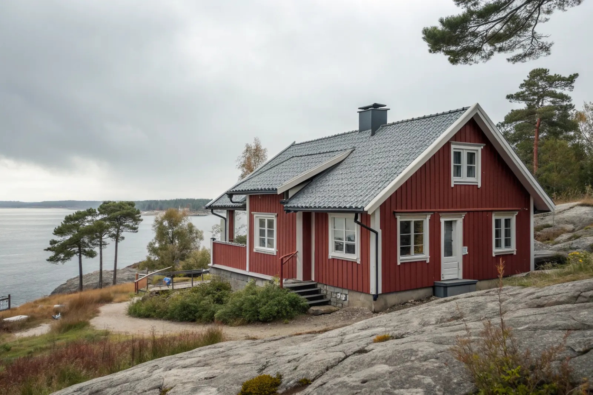

Takbyte i Tyresö
Byte av tegel-, betong- och plåttak.
Takbyte i Tyresö →Tyresö sydost om Stockholm består till stor del av villaområden mellan skog och vatten. Vi är takläggare i Tyresö för villor, radhus och permanentade fritidshus i bland annat Trollbäcken, Bollmora, Krusboda, Tyresö strand, Brevik och Öringe.
Mycket av Tyresö var tidigare sommarstugeområden. Brevik, Öringe, Raksta och delar av Tyresö strand har många hus som från början var fritidshus och som byggts ut och permanentats. Bollmora och Krusboda byggdes under 1960–70-talet, och Trollbäcken har stora villaområden från samma tid och framåt.
Läget vid Östersjöns vikar och närheten till Tyresta nationalpark gör att många hus ligger omgivna av skog. Tak under tall och gran får barr i rännorna och mossa på pannorna, och i strandnära lägen tar vinden i takfötter och nockar.
De permanentade fritidshusen har ofta tak som byggts på i etapper. Vi bedömer hela taket och föreslår en lösning som håller för helårsboende.
Oavsett om du behöver ett komplett takbyte eller en riktad renovering ger vi en tydlig bedömning och offert. Vi arbetar även i grannområden – se alla områden vi arbetar i.

På permanentade fritidshus möter vi ofta tak med flera lutningar och material efter olika tillbyggnader, papp direkt på råspont och för liten luftspalt efter att vinden isolerats. Det ger kondens och mögel på vinden, och ibland läckage där takdelarna möts.
I villaområdena från 1960–70-talet är betongpannor vanligast. Närheten till vatten och skog ger fuktiga takytor där mossa trivs och plåtdetaljer korroderar snabbare. Vattnet i vikarna är bräckt och mindre salt än ute i havsbandet, men vind och fukt sliter ändå på exponerade tak.
Bygglov och anmälan hanteras av Tyresö kommun. Nytt takmaterial eller ny kulör på en villa är normalt lovfritt, men höjs taket – till exempel när ett fritidshus byggs på – krävs bygglov. Byts takstolarna krävs anmälan.
Många tomter i de gamla sommarstugeområdena nås via smala vägar och ligger på berg. Vi kontrollerar framkomlighet och var container och ställning kan stå vid platsbesöket.
Byte av tegel-, betong- och plåttak.
Takbyte i Tyresö →Riktade åtgärder som förlänger takets liv.
Takrenovering i Tyresö →Bedömning av skick inför beslut.
Takbesiktning i Tyresö →Nytt ytskydd på plåttak.
Takmålning i Tyresö →Skonsam tvätt och mossbehandling.
Taktvätt i Tyresö →Nytt plåttak och plåtarbeten.
Plåttak i Tyresö →Vi utgår från Bromma (Mariehäll) och tar uppdrag i hela Storstockholm, även Tyresö. Vi samlar platsbesök och leveranser så att projektet flyter.
Läs mer om tak på villa eller jämför takbyte och takrenovering innan du bestämmer dig.
Vi arbetar även i Haninge.
Takläggare i Haninge →Vi arbetar även i Farsta.
Takläggare i Farsta →Vi arbetar även i Nacka.
Takläggare i Nacka →Vi arbetar även i Värmdö.
Takläggare i Värmdö →